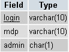
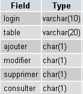
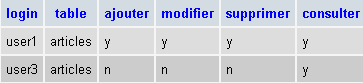
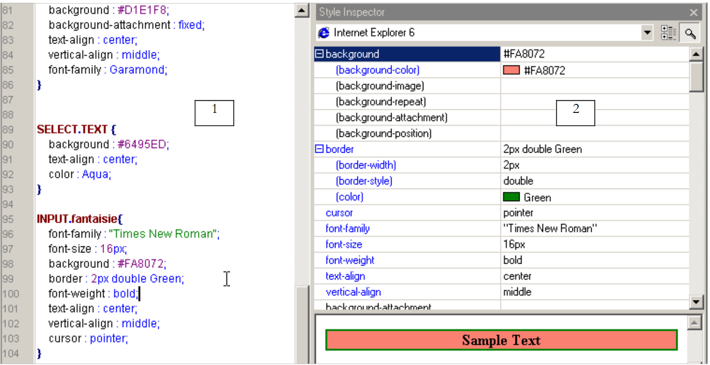
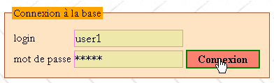
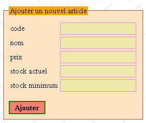
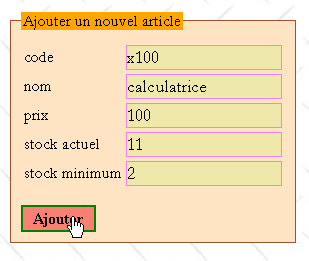
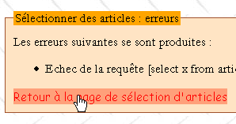
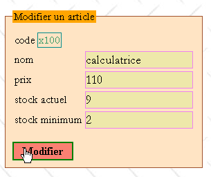
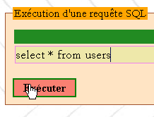

7. Caso di studio: Gestione di un database di prodotti sul Web
Il codice per questo caso di studio è disponibile |QUI|.
Obiettivi:
- Scrivere una classe per gestire un database di prodotti
- Scrivere un'applicazione web basata su questa classe
- Introdurre i fogli di stile
- proporre una metodologia di sviluppo iniziale per semplici applicazioni web
- Introdurre JavaScript nel browser client
Crediti: L'essenza di questo caso di studio è stata tratta dal libro "Les cahiers du programmeur - PHP/MySQL" di Jean-Philippe Leboeuf, pubblicato da Eyrolles.
7.1. Introduzione
Un commerciante desidera gestire gli articoli che vende nel suo negozio. A casa dispone già di un'applicazione Access che svolge questo compito, ma è attratto dal mondo del web. Ha un account presso un provider di servizi Internet che consente ai propri clienti di installare script PHP nelle loro cartelle personali. Ciò permette loro di creare siti web dinamici. Inoltre, questi stessi clienti dispongono di un account MySQL che consente loro di creare tabelle per fornire dati ai propri script PHP. Pertanto, il proprietario del negozio dispone di un account MySQL con il nome utente "adarticles" e la password "mdparticles". Ha un database denominato "darticles" sul quale ha pieni diritti di accesso. Il nostro commerciante ha quindi tutto il necessario per mettere online il suo sistema di gestione dei prodotti. Con il vostro aiuto, dato che avete competenze nello sviluppo web, sta intraprendendo questa avventura.
7.2. Il database
Il nostro commerciante ha creato il seguente mockup dell'interfaccia della homepage web che vorrebbe:

Ci sarebbero due tipi di utenti:
- amministratori che avrebbero pieno accesso alla tabella dei prodotti (aggiungere, modificare, eliminare, visualizzare, ecc.). Potrebbero utilizzare tutte le voci di menu sopra elencate. In particolare, potrebbero eseguire qualsiasi query SQL tramite l'opzione [Query SQL].
- Utenti regolari (non amministratori) con diritti limitati: il diritto di aggiungere, modificare, eliminare e visualizzare. Potrebbero disporre solo di alcuni di questi diritti, come ad esempio il diritto di visualizzazione.
Poiché esistono vari tipi di utenti del database con autorizzazioni diverse, è richiesta l'autenticazione. Questo è il motivo per cui la homepage inizia con questo passaggio. Per determinare chi è chi e chi ha l'autorizzazione a fare cosa, verranno utilizzate due tabelle: USERS e PERMISSIONS. La tabella USERS avrebbe la seguente struttura:
 |
|
Il contenuto della tabella potrebbe essere il seguente:

La tabella RIGHTS specifica i diritti degli utenti non amministratori elencati nella tabella USERS. La sua struttura è la seguente:
 |
|
Il contenuto della tabella potrebbe essere il seguente:

Note:
- Un utente U presente nella tabella USERS ma non nella tabella RIGHTS non ha alcun diritto.
- Nel nostro esempio, gli utenti avranno accesso solo a una singola tabella, la tabella ARTICLES. Tuttavia, il nostro commerciante lungimirante ha comunque aggiunto il campo table alla struttura della tabella RIGHTS per darsi la possibilità di aggiungere nuove tabelle alla sua applicazione in un secondo momento.
- Perché gestire le autorizzazioni nelle nostre tabelle quando presumiamo di utilizzare un database MySQL in grado di gestire queste autorizzazioni nelle proprie tabelle (e meglio di quanto possiamo fare noi)? Semplicemente perché il nostro commerciante non dispone dei privilegi amministrativi sul database MySQL che gli consentirebbero di creare utenti e concedere loro autorizzazioni. Non dimentichiamo che il database MySQL è ospitato da un provider di servizi Internet e che il commerciante ne è semplicemente un utente senza diritti amministrativi (fortunatamente). Tuttavia, ha pieno accesso a un database chiamato dbarticles, a cui attualmente accede utilizzando il nome utente admarticles e la password mdparticles. Questo database contiene tutte le tabelle dell'applicazione.
La tabella ARTICLES contiene informazioni sugli articoli venduti dal commerciante. La sua struttura è la seguente:
 |
|
Il suo contenuto, inizialmente utilizzato a scopo di test, potrebbe essere il seguente:

7.3. Vincoli del progetto
Il commerciante sta migrando un'applicazione ACCESS locale verso un'applicazione web. Non sa quale sarà il suo futuro né come si evolverà. Tuttavia, vorrebbe che la nuova applicazione fosse facile da usare e scalabile. Per questo motivo, il suo consulente informatico ha previsto, durante la progettazione delle tabelle, che potessero esserci:
- vari utenti con permessi diversi: questo permetterà al commerciante di delegare determinati compiti ad altri senza concedere loro diritti amministrativi
- in futuro, tabelle diverse dalla tabella ARTICLES
Lo stesso consulente formula altri suggerimenti:
- sa che nello sviluppo di software, il livello di presentazione e il livello di elaborazione devono essere chiaramente separati. L'architettura di un'applicazione web è spesso la seguente:
 |
L'interfaccia utente in questo caso è un browser web, ma potrebbe anche essere un'applicazione autonoma che invia richieste HTTP al servizio web attraverso la rete e formatta i risultati ricevuti. La logica dell'applicazione consiste in script che elaborano le richieste degli utenti, in questo caso script PHP. La fonte dei dati è spesso un database, ma può anche essere una directory LDAP o un servizio web remoto. È nell'interesse dello sviluppatore mantenere un alto grado di indipendenza tra queste tre entità, in modo che se una di esse cambia, le altre due non debbano cambiare, o solo in misura minima. Il consulente IT del commerciante formula quindi le seguenti proposte:
- Inseriremo la logica di business dell'applicazione in una classe PHP. Pertanto, il blocco [Logica dell'applicazione] sopra riportato sarà costituito dai seguenti elementi:
 |
All'interno del blocco [Logica dell'applicazione], possiamo distinguere
- il blocco [IE=Interfaccia di input], che funge da punto di ingresso dell’applicazione. Rimane lo stesso indipendentemente dal tipo di client.
- il blocco [Classi di business], che contiene le classi necessarie per la logica dell’applicazione. Queste sono indipendenti dal client.
- il blocco dei generatori di pagine di risposta [IS1 IS2 ... IS=Interfaccia di output]. Ciascun generatore è responsabile della formattazione dei risultati forniti dalla logica applicativa per un dato tipo di client: codice HTML per un browser o un telefono WAP, codice XML per un'applicazione standalone, ...
Questo modello garantisce un elevato grado di indipendenza dai client. Sia che il client cambi o che si desideri evolvere il modo in cui vengono presentati i risultati, sono i generatori di output [IS] che dovranno essere creati o adattati.
- In un'applicazione web, la separazione tra il livello di presentazione e il livello della logica di business può essere migliorata utilizzando i fogli di stile. Questi regolano la presentazione di una pagina web all'interno di un browser. Per modificare questa presentazione, è sufficiente modificare il foglio di stile associato. Non è necessario alterare la logica di business. Utilizzeremo quindi un foglio di stile in questo caso.
- Nel diagramma sopra, la classe di business si interfaccerà con la fonte dati. Per ipotesi, questa fonte è un database MySQL. Per consentire la migrazione verso un altro database, useremo la libreria PEAR, che fornisce classi di accesso al database indipendenti dal tipo di database effettivo. Pertanto, se il nostro commerciante diventa abbastanza ricco da installare un server web Microsoft IIS nella propria azienda, potrà sostituire il database MySQL con SQL Server senza dover (o con pochissima necessità di) modificare la classe di business.
7.4. La classe Prodotti
La classe **articles** potrebbe essere definita come segue:
<?php
// articles class, working on an article database composed of the following tables
// items: (code, name, price, stockActuel, stockMinimum)
// users : (login, mdp, admin)
// rights: (login, table, add, modify, delete, view)
// it is the user of the class who must provide the login/mdp to perform any operation on the database
// so he already has all rights to the base. This means that there is no need to take
// special safety precautions here
// libraries
require_once 'DB.php';
class articles{
// attributes
var $sDSN; // the connection chain
var $sDatabase; // base name
var $oDB; // connection to base
var $aErreurs; // error list
var $oRésultats; // result of a select query
var $connecté; // boolean indicating whether or not you are connected to the database
var $sQuery; // the last query executed
var $sUser; // identity of connection user
var $bAdmin; // true if the user is an administrator
var $dDroits; // the dictionary of its rights table ->> array(consult,add,delete,modify)
// manufacturer
function articles($dDSN,$sUser,$sMdp){
// $dDSN: dictionary defining the link to be established
// $dDSN['sgbd']: type of SGBD to be connected to
// $dDSN['host']: name of the host machine hosting it
// $dDSN['database']: name of the database to be connected to
// $dDSN['admin']: the login of the owner of the database to be connected to
// $dDSN['mdpadmin']: its password
// $sUser: login of the user who wants to use the article database
// $sMdp: password
// creates in $oDB a connection to the database defined by $dDSN as $dDSN['admin']
// if connection succeeds and user $sUser is authenticated
// loads rights into $bAdmin and $dDroits user rights $sUser
// sets $sDSN to the database connection string
// sets $sDataBase to the name of the database to which you are connecting
// sets $connecté to true
// if connection fails or if user $sUser is not correctly identified
// sets the appropriate error msg in the $aErreurs list
// closes the connection if necessary
// sets $connecté to false
...
}//manufacturer
// ------------------------------------------------------------------
function connect(){
// (re)connecting to the base
...
}//connect
// ------------------------------------------------------------------
function disconnect(){
// close the connection to the $sDSN database
...
}//disconnect
// -------------------------------------------------------------------
function execute($sQuery,$bAdmin){
// $sQuery: query to be executed
// $bAdmin : true if requesting execution as administrator
...
}//execute
// --------------------------------------------------------------------------
function addArticle($dArticle){
// adds item $dArticle (code, name, price, stockActuel, stockMinimum) to the item table
...
}//add
// ----------------------------------------------------------------------
function modifyArticle($dArticle){
// modifies an item $dArticle (code, name, price, stockActuel, stockMinimum) in the item table
...
}//update
// ----------------------------------------------------------------------
function deleteArticle($sCode){
// deletes an item from the table of items
// whose code is $sCode
...
}//delete
// ----------------------------------------------------------------------
function vérifierArticle(&$dArticle){
// checks the validity of an item $dArticle (code, name, price, stockActuel, stockMinimum)
...
}//check
// --------------------------------------------------------------------------
function selectArticles($dQuery){
// executes a select query of the item table
// it has three components
// list of columns in $dQuery['columns']
// filtering in $dQuery['where']
// order of presentation in $dQuery['orderby']
...
}//selectArticles
// --------------------------------
function existeArticle($sCode){
// returns TRUE if item code $sCode exists in the item table
...
}//existeArticle
// --------------------------------------
function existeUser($sUser,$sMdp){
// check existence of user $sUser with password $sMdp
// rend (int $iErreur, string $sAdmin, hashtable $dDroits)
// $iErreur = -1 for any database operating error - the $aErreurs list is then filled in
// $iErreur = 1 if user not found (absent or wrong password)
// $iErreur = 2 if the user exists but has no rights in the rights table
// $iErreur = 3 if the user exists and is an administrator
// $iErreur = 0 if the user exists and is not an administrator
// $sAdmin="y" if the user exists and is an administrator ($iErreur==3), otherwise it is equal to the empty string
// $dDroits is the user's rights dictionary if the user is not an administrator ($iErreur==0)
// otherwise it's an empty array
// dictionary keys are tables to which the user has rights
// the value associated with this table is in turn a dictionary where the keys are the rights
// (consult, add, modify, delete) and the values are the strings 'y' (yes) or 'n' (no) depending on the case
...
}//existeUser
// --------------------------------------
function getCodes(){
// makes the code table
....
}//getCodes
}//class
?>
Commenti
- La classe articles utilizza la libreria PEAR::DB per accedere al database, da qui il comando
Questa inclusione presuppone che lo script DB.php si trovi in una delle directory specificate nell'opzione include_path del file di configurazione di PHP.
- Il builder deve sapere a quale database connettersi e con quale identità. Queste informazioni sono fornite nel dizionario $dDSN. Ricordiamo che l'ipotesi iniziale era che il database si chiamasse dbarticles e appartenesse a un utente chiamato admarticles con la password mdparticles. Si noti inoltre che questa applicazione supporta più utenti con permessi diversi. C'è un'ambiguità qui che deve essere risolta. La connessione viene effettivamente aperta con l'identità di admarticles e, in definitiva, tutte le operazioni sul database dbarticles saranno eseguite con questa identità, poiché è l'unico nome riconosciuto dal DBMS MySQL che dispone di privilegi sufficienti per gestire il database dbarticles. Per "simulare" l'esistenza di utenti diversi, faremo in modo che l'utente admarticles operi con i permessi dell'utente il cui login ($sUser) e password ($sMdp) vengono passati come parametri al costruttore. Pertanto, prima di eseguire un'operazione sul database articles, verificheremo che l'utente ($sUser, $sMdp) disponga dei permessi necessari per farlo. In tal caso, l'utente admarticles eseguirà l'operazione per suo conto.
- Il login e la password dell'amministratore del database dei prodotti devono essere passati al costruttore. Si tratta di una precauzione saggia. Se queste due informazioni fossero hardcoded nella classe, qualsiasi utente della classe potrebbe facilmente impersonare l'amministratore del database dei prodotti. Infatti, una classe PHP non è protetta. Pertanto, l'attributo $bAdmin della classe — che indica se l'utente ($sUser, $sMdp) per cui stiamo lavorando è un amministratore o meno — potrebbe benissimo essere impostato direttamente dall'esterno, come nell'esempio seguente:
$oArticles=new articles($dDSN,$sUser,$sMdp)
// ici $sUser a été reconnu comme un utilisateur non administrateur de la base
$oArticle->bAdmin=TRUE;
// maintenant $sUser est devenu administrateur
PHP non è Java o C#, e una classe PHP è semplicemente una struttura dati leggermente più avanzata di un dizionario, ma che non offre la sicurezza di una vera classe in cui l'attributo bAdmin sarebbe stato dichiarato privato o protetto, rendendo impossibile modificarlo dall'esterno. Poiché l'utente della classe deve conoscere il login e la password dell'amministratore del database degli articoli, solo quest'ultimo può utilizzare la classe. L'operazione precedente non è quindi più di alcun interesse per lui. La classe è lì esclusivamente per fornirgli comodità di sviluppo. Una conseguenza importante è che non c'è bisogno di prendere precauzioni di sicurezza. Ancora una volta, chiunque utilizzi la classe *articles* è necessariamente l'amministratore del database del prodotto.
- La classe gestisce gli errori di connessione al database o qualsiasi altro errore in modo uniforme, popolando l'attributo $aErrors con i messaggi di errore. Dopo ogni operazione, l'utente della classe deve quindi controllare questo elenco.
- I metodi addArticle, updateArticle, deleteArticle, selectArticles ed execute derivano direttamente dal mockup dell'interfaccia web presentato in precedenza. Essi corrispondono alle opzioni del menu. I metodi addArticle e modifyArticle si avvalgono del metodo verifyArticle per garantire che l'elemento da aggiungere o modificare contenga dati corretti. Allo stesso modo, il metodo existsArticle assicura che non si stia per aggiungere un articolo già esistente. Potremmo fare a meno di questo metodo se utilizzassimo una tabella articles in cui il codice è la chiave primaria. In tal caso, il DBMS stesso segnalerà l'errore dell'aggiunta a causa di un duplicato. Probabilmente lo farà con un messaggio di errore difficile da leggere e in inglese.
- Un elemento da modificare o eliminare sarà identificato dal suo codice univoco. Il metodo `getCodes` recupera tutti questi codici.
- Il metodo disconnect chiude la connessione al database, che era stata aperta al momento della creazione dell'oggetto. Non vediamo qui l'utilità del metodo connect, che ristabilirebbe una connessione al database. Questo ci permette di aprire e chiudere questa connessione a piacimento utilizzando lo stesso oggetto. Il vantaggio diventa evidente solo se utilizzato in combinazione con l'applicazione web. L'applicazione creerà un oggetto items e lo memorizzerà in una sessione. Sebbene la sessione sia in grado di conservare la maggior parte degli attributi dell'oggetto durante i successivi scambi client-server, non può conservare l'attributo che rappresenta la connessione aperta. Questa connessione deve quindi essere riaperta ad ogni nuovo scambio client-server. Richiederemo una connessione persistente in modo che la connessione aperta venga memorizzata in un pool di connessioni e rimanga aperta in modo permanente. Pertanto, quando lo script richiede una nuova connessione, questa verrà recuperata dal pool di connessioni. Otteniamo quindi lo stesso risultato che si avrebbe se la sessione fosse stata in grado di memorizzare la connessione aperta.
- Il metodo `existeUser` consente al costruttore di determinare se l'utente `$sUser`, identificato dalla password `$sMdp`, esiste effettivamente. In tal caso, il metodo verifica se l'utente è un amministratore (come indicato nella tabella `USERS`) e memorizza questa informazione nell'attributo `$bAdmin`. Se non è un amministratore, il metodo recupera i suoi permessi dalla tabella DROITS e li memorizza nell'attributo $dDroits, che è un dizionario a doppio indice: $dDroits[$table][$permission] è 'y' se l'utente $sUser ha il $permission sulla $table e 'n' in caso contrario.
Scrivi la classe articles. L'accesso al database sarà gestito utilizzando la libreria PEAR::DB, che ti permette di lavorare indipendentemente dal tipo esatto di database.
7.5. La struttura dell'applicazione web
Ora che abbiamo la classe di "logica di business" per la gestione del database degli articoli, possiamo utilizzarla in vari ambienti. Qui proponiamo di utilizzarla in un'applicazione web. Esploriamola attraverso queste diverse pagine:
7.5.1. La pagina principale dell'applicazione
Torniamo alla home page che abbiamo già visto:
1234
Tutte le pagine dell'applicazione avranno la struttura mostrata sopra: una tabella con due righe e tre colonne composta da quattro sezioni:
- La zona 1 costituisce la prima riga della tabella. È riservata al titolo, eventualmente accompagnato da un'immagine. Le tre colonne di questa riga sono unite qui.
- La seconda riga presenta tre aree, una per colonna:
- La zona 2 contiene le opzioni del menu. A sua volta, contiene una tabella con una colonna e diverse righe. Le opzioni del menu sono collocate nelle righe della tabella.
- La zona 3 è vuota e serve solo a separare le zone 2 e 4. Avremmo potuto procedere in modo diverso per ottenere questa separazione.
- La zona 4 è quella che contiene la parte dinamica della pagina. Questa è la parte che cambia da un'azione all'altra, mentre le altre rimangono invariate.
Lo script PHP che genera questa pagina modello si chiamerà main.php e potrebbe apparire così:
<html>
<head>
<title>Gestion d'articles</title>
<link type="text/css" href="<?php echo $dConfig['urlPageStyle'] ?>" rel="stylesheet" />
</head>
<body background="<?php echo $dConfig['urlBackGround'] ?>">
<table>
<tr height="60">
<td colspan="3" align="left" valign="top" >
<h1><?php echo $main["title"] ?></h1>
</td>
</tr>
<tr>
<td>
<table>
<tr>
<td class="menutitle" >
<a href="<?php echo $main["liens"]["login"] ?>" ?>Authentification</a>
</td>
</tr>
<tr>
<td><br /></td>
</tr>
<tr>
<td class="menutitle" >
Utilisation
</td>
</tr>
<tr height="10"></tr>
<tr>
<td class="menublock" >
<img alt="-" src="../images/radio.gif" />
<a href="<?php echo $main["liens"]["addArticle"] ?>" ?>
Ajouter un article
</a>
</td>
</tr>
<tr>
<td class="menublock" >
<img alt="-" src="../images/radio.gif" />
<a href="<?php echo $main["liens"]["updateArticle"] ?>">
Modifier un article
</a>
</td>
</tr>
<td class="menublock" >
<img alt="-" src="../images/radio.gif" />
<a href="<?php echo $main["liens"]["deleteArticle"] ?>">
Supprimer un article
</a>
</td>
</tr>
<tr>
<td class="menublock" >
<img alt="-" src="../images/radio.gif" />
<a href="<?php echo $main["liens"]["selectArticle"] ?>">
Lister des articles
</a>
</td>
</tr>
<tr>
<td><br /></td>
</tr>
<tr>
<td class="menutitle" >
Administration
</td>
</tr>
<tr height="10"></tr>
<tr>
<td class="menublock" >
<img alt="-" src="../images/radio.gif" />
<a href="<?php echo $main["liens"]["sql"] ?>" >
Requête SQL
</a>
</td>
</tr>
</table>
</td>
<td>
<img alt="/" src="../images/pix.gif" width="10" height="1" />
</td>
<td>
<fieldset>
<legend><?php echo $main["légende"] ?></legend>
<?php
include $main["contenu"];
?>
</fieldset>
</td>
</tr>
</table>
</body>
</html>
Le sezioni configurate della pagina sono state evidenziate nell'elenco sopra riportato. La pagina del modello è configurata in diversi modi:
- tramite un dizionario $main con le seguenti chiavi:
- title: titolo da inserire nella zona 1 della pagina
- links: dizionari di link da generare nella colonna del menu. Questi link sono associati alle opzioni del menu nella zona 2
- content: URL della pagina da visualizzare nella zona 4
- da un dizionario $dConfig contenente informazioni estratte da un file di configurazione dell'applicazione denominato config.php
- da classi che fanno parte del foglio di stile utilizzato dalla pagina:
La pagina utilizza qui le seguenti classi di stile:
- menutitle: per un'opzione del menu principale
- menublock: per un'opzione del menu secondario
Modificando uno qualsiasi di questi parametri si modifica l'aspetto della pagina. Ad esempio, modificando $main['title'] si modificherà il titolo della zona 1.
7.5.2. Elaborazione tipica di una richiesta del cliente
Il cliente interagisce con l'applicazione tramite i link presenti nell'area 2 della pagina del modello. Questi link saranno del seguente tipo:
si riferisce all'azione corrente tra le seguenti:
| |||||||||||
un'azione può essere eseguita in più passaggi - si riferisce al passaggio corrente | |||||||||||
token di sessione all'avvio della sessione - consente al server di recuperare le informazioni memorizzate nella sessione durante gli scambi precedenti |
Allo stesso modo, l'attributo action nei moduli avrà lo stesso formato. Ad esempio, nella pagina iniziale è presente un modulo di login nella sezione 4. Il tag HTML per questo modulo è definito come segue:
La richiesta del client viene elaborata dallo script principale dell'applicazione, denominato apparticles.php. Il suo compito è quello di costruire la risposta al client. Procederà sempre allo stesso modo:
- In base al nome dell'azione e alla fase corrente, inoltrerà la richiesta a una funzione specializzata. Questa funzione elaborerà la richiesta e genererà la pagina di risposta appropriata. Per ogni richiesta del client, possono esserci diverse pagine di risposta possibili: page1, page2, ..., pagen. Queste pagine contengono informazioni che devono essere calcolate dalla funzione. Sono quindi pagine parametrizzate. Saranno generate dagli script page1.php, page2.php, ..., pagen.php.
- Per coerenza, anche le parti variabili delle pagine da visualizzare nella zona 4 della pagina modello saranno inserite nel dizionario $main.
Supponiamo che, in risposta a una richiesta, il server debba inviare la pagina pagex.php al client. Procederà come segue:
- Inserirà i valori richiesti per la pagina pagex.php nel dizionario $main
- imposterà $main['content'], che specifica l'URL della pagina da visualizzare nella zona 4 della pagina modello, sull'URL di pagex.php
- richiederà la visualizzazione della pagina del template con l'istruzione
La pagina modello verrà quindi visualizzata con il codice dello script pagex.php nella zona 4, che verrà valutato per generare il contenuto della zona 4. Ricordiamo che si tratta di una semplice cella in un array. Pertanto, il codice HTML generato da pagex.php non deve iniziare con i tag <HTML>, <HEAD>, <BODY>, .... Questi sono già stati generati all'inizio della pagina modello. Ecco un esempio di come potrebbe apparire lo script login.php che genera la zona 4 della home page:
<form name="frmLogin" method="post" action="<?php echo $main["post"] ?>">
<table>
<tr>
<td>login</td>
<td><input type="text" value="<?php echo $main["login"] ?>" name="txtLogin" class="text"></td>
</tr>
<tr>
<td>mot de passe</td>
<td><input type="password" value="" name="txtMdp" class="text"></td>
<td><input type="submit" value="Connexion" class="submit"></td>
</tr>
</table>
</form>
Possiamo vedere che la pagina:
- è ridotta a un modulo
- è stilizzata sia dal dizionario $main che dal foglio di stile.
7.5.3. Il file di configurazione
È sempre meglio configurare le applicazioni il più possibile per evitare di dover modificare il codice semplicemente perché, ad esempio, si è deciso di cambiare il percorso di uno script o di un'immagine. L'applicazione principale, apparticles.php, caricherà quindi un file di configurazione, config.php, all'avvio:
In questo file includeremo le direttive di configurazione per PHP e le inizializzazioni delle variabili globali:
<?php
// php configuration
ini_set("register_globals","off");
ini_set("display_errors","off");
ini_set("expose_php","off");
ini_set("session.use_cookies","0"); // no cookies
// item base configuration
$dConfig["DSN"]=array(
"sgbd"=>"mysql",
"admin"=>"admarticles",
"mdpadmin"=>"mdparticles",
"host"=>"localhost",
"database"=>"dbarticles"
);
// page url
$dConfig['urlBackGround']="../images/standard.jpg";
$dConfig["urlPageStyle"]="mystyle.css";
$dConfig["urlAppArticles"]="apparticles.php";
$dConfig["urlPageMain"]="main.php";
$dConfig["urlPageLogin"]="login.php";
$dConfig["urlPageErreurs"]="erreurs.php";
$dConfig["urlPageInfos"]="infos.php";
$dConfig["urlPageAddArticle"]="addarticle.php";
$dConfig["urlPageUpdateArticle1"]="updatearticle1.php";
$dConfig["urlPageUpdateArticle2"]="updatearticle2.php";
$dConfig["urlPageDeleteArticle1"]="deletearticle1.php";
$dConfig["urlPageDeleteArticle2"]="deletearticle2.php";
$dConfig["urlPageSelectArticle1"]="selectarticle1.php";
$dConfig["urlPageSelectArticle2"]="selectarticle2.php";
$dConfig["urlPageSQL1"]="sql1.php";
$dConfig["urlPageSQL2"]="sql2.php";
$dConfig["urlPageSQL3"]="sql3.php";
// main page links
$main["liens"]["login"]="$sUrlAppArticles?action=authentifier&phase=0";
$main["liens"]["addArticle"]="$sUrlAppArticles?action=addArticle&phase=0";
$main["liens"]["updateArticle"]="$sUrlAppArticles?action=updateArticle&phase=0";
$main["liens"]["deleteArticle"]="$sUrlAppArticles?action=deleteArticle&phase=0";
$main["liens"]["selectArticle"]="$sUrlAppArticles?action=selectArticle&phase=0";
$main["liens"]["sql"]="$sUrlAppArticles?action=sql&phase=0";
// we store $main in the configuration
$dConfig["main"]=$main;
?>
7.5.4. Il foglio di stile associato alla pagina del template
Abbiamo visto che la risposta del server aveva un unico formato: quello di main.php. Avrete notato che questo script produce una pagina semplice, priva di qualsiasi stile visivo. Questo è un aspetto positivo per diversi motivi:
- lo sviluppatore non deve preoccuparsi della presentazione visiva della pagina. Potrebbe non avere necessariamente le competenze per creare pagine visivamente accattivanti. In questo modo, può concentrarsi interamente sul codice.
- la manutenzione dello script è semplificata. Se gli script includessero attributi di presentazione, né la struttura del codice né quella della presentazione sarebbero chiaramente visibili. Il design visivo delle pagine è spesso affidato a un grafico. Probabilmente il grafico non vorrebbe dover cercare in uno script che non capisce per trovare gli attributi di presentazione che deve modificare.
Tuttavia, l'aspetto visivo delle pagine deve essere considerato con attenzione. Dopotutto, è questo che attira gli utenti verso un sito web. In questo caso, la presentazione è delegata a un foglio di stile. La pagina main.php specifica nel suo codice quale foglio di stile utilizzare per il rendering:
<head>
<title>Gestion d'articles</title>
<link type="text/css" href="<?php echo $dConfig['urlPageStyle'] ?>" rel="stylesheet" />
</head>
Il foglio di stile utilizzato in questo documento è il seguente:
BODY {
background : url(../images/standard.jpg);
border : 2px none #FFDAB9;
font-family : Garamond;
font-size : 16px;
margin-left : 0px;
padding-left : 20px;
}
INPUT {
background : #EEE8AA;
border : 1px solid #EE82EE;
font-family : Garamond;
font-size : 18px;
}
INPUT.submit{
font-family : "Times New Roman";
font-size : 16px;
background : #FA8072;
border : 2px double Green;
font-weight : bold;
text-align : center;
vertical-align : middle;
cursor : pointer;
}
TD.menutitle{
background-image : url(../images/menugelgd.gif);
height : 23px;
text-align : center;
vertical-align : middle;
background : url(../images/menugelgd.gif) no-repeat center;
}
TD.menublock{
background : url(../images/bandegrismenugd.gif) repeat-x;
text-align : left;
vertical-align : middle;
}
A {
font-family : "Comic Sans MS";
color : #FF7F50;
font-size : 15px;
text-decoration : none;
}
A:HOVER {
background : #FFA07A;
color : Red;
}
FIELDSET {
border : 1px solid #A0522D;
background : #FFE4C4;
margin : 10px 10px 10px 10px;
padding-left : 10px;
padding-right : 10px;
padding-bottom : 10px;
}
LEGEND{
background : #FFA500;
}
TH {
background : #228B22;
text-align : center;
vertical-align : middle;
}
TD.libellé{
border : 1px solid #008B8B;
color : #339966;
}
H1 {
font : bold 20px/30px Garamond;
color : #FF7F50;
background : #D1E1F8;
background-attachment : fixed;
text-align : center;
vertical-align : middle;
font-family : Garamond;
}
SELECT.TEXT {
background : #6495ED;
text-align : center;
color : Aqua;
}
Non entreremo nei dettagli di questo foglio di stile. Lo accetteremo così com'è. Più avanti vedremo come costruirlo e modificarlo. Esistono software appositi per farlo. Tuttavia, descriviamo brevemente il ruolo degli attributi di presentazione utilizzati nel foglio:
Attributo: | controlla la presentazione del tag HTML: |
<BODY> | |
<H1> (Intestazione 1) | |
<A> (Anchor) | |
imposta gli attributi di visualizzazione dell'ancora quando l'utente ci passa sopra con il mouse | |
<FIELDSET> - questo tag non è riconosciuto da tutti i browser | |
<LEGEND> - questo tag non è riconosciuto da tutti i browser | |
<INPUT> | |
<INPUT class="TEXT"> | |
<INPUT class="SUBMIT"> | |
<TH> (Intestazione tabella) | |
<TD class="menutitle"> (Dati della tabella) | |
<TD class="menublock"> | |
<TD class="label"> |
Vediamo un esempio di come si possono scrivere queste regole di presentazione. In questo esempio useremo il software TopStyle Lite, disponibile gratuitamente su http://www.bradsoft.com. Una volta caricato il foglio di stile, appare una finestra con tre sezioni:
- un'area di modifica del testo. Gli attributi di stile possono essere definiti manualmente, a condizione che si conoscano le regole per la scrittura dei fogli di stile, che seguono uno standard denominato CSS (Cascading Style Sheets).
- L'area 2 mostra le proprietà modificabili dell'attributo attualmente in fase di creazione. Questo è il metodo più semplice. Evita la necessità di conoscere i nomi esatti dei numerosi attributi di presentazione
- La zona 3 mostra l'aspetto visivo dell'attributo in fase di creazione
 |
Nell'area 1 sopra, copiamo e incolliamo l'attributo INPUT.submit in un attributo INPUT.fantasy. Questo attributo imposterà la presentazione del tag HTML <INPUT class="fantasy">
 |
Utilizziamo l'Area 2 per modificare alcune delle proprietà dell'attributo INPUT.fantasy:
 |
D'ora in poi, qualsiasi tag <INPUT ... class="fantaisie"> presente in una pagina HTML collegata al foglio di stile precedente verrà visualizzato come mostrato nell'esempio nell'area 3 sopra.
I fogli di stile sono molto utili. Il loro utilizzo consente di cambiare l’aspetto di un’applicazione web modificando una sola cosa: il suo foglio di stile. I fogli di stile non sono supportati dai browser più vecchi. La direttiva <link ..> riportata di seguito verrà ignorata da alcuni di essi:
<head>
<title>Gestion d'articles</title>
<link type="text/css" href="<?php echo $dConfig['urlPageStyle'] ?>" rel="stylesheet" />
</head>
Nella nostra applicazione, questo darà come risultato la seguente pagina iniziale:

Si tratta di una pagina minimale priva di elementi grafici. Potrebbe andare peggio. Alcune versioni dei browser riconoscono i fogli di stile ma li interpretano in modo errato. Ciò può portare a una pagina distorta e inutilizzabile. Ciò solleva la questione del tipo di browser del client. Esistono tecniche che aiutano a determinare il tipo di browser del client. Non sono del tutto affidabili. Potremmo quindi scrivere fogli di stile diversi per browser diversi o persino creare una versione senza foglio di stile per i browser che li ignorano. Questo, ovviamente, complica il processo di sviluppo. Questo problema significativo è stato ignorato in questa sede.
Con i fogli di stile, possiamo immaginare di offrire un ambiente personalizzato agli utenti della nostra applicazione. Potremmo presentare loro una pagina che offre diversi stili di layout possibili. Potrebbero scegliere quello che più si adatta alle loro esigenze. Questa scelta potrebbe essere memorizzata in un database. Quando l'utente effettua nuovamente l'accesso, potremmo quindi avviare l'applicazione con il foglio di stile da loro selezionato.
7.5.5. Il modulo di accesso all'applicazione
I clienti vedranno solo il modulo di accesso dell'applicazione: apparticles.php. Il funzionamento generale è il seguente:
- La richiesta del cliente viene recuperata e analizzata. Può essere parametrizzata o meno. Quando è parametrizzata, i parametri previsti sono i seguenti: action=[action]&phase=[phase]&PHPSESSID=[PHPSESSID]
- Se la richiesta non è parametrizzata o se i parametri recuperati non corrispondono a quelli previsti, il server risponde inviando la pagina di autenticazione (nome utente, password). Una volta che l'utente ha effettuato correttamente l'accesso, viene creata una sessione. Questa sessione verrà utilizzata per memorizzare le informazioni durante le interazioni client-server.
- Se una richiesta viene riconosciuta correttamente, viene elaborata da un modulo che dipende sia dall'azione che dalla fase corrente.
- Tutti gli accessi al database vengono gestiti tramite la classe di business articles.php.
- L'elaborazione di una richiesta termina sempre con l'invio al client della pagina main.php, in cui l'URL della pagina da inserire nella zona 4 della pagina del template è stato specificato in $main['content'].
Lo scheletro dello script **apparticles.php** potrebbe essere il seguente:
<?php
// item table management
include "config.php";
include "articles.php";
// action to be taken
$sAction=$_POST["action"] ? $_POST["action"] : $_GET["action"] ? $_GET["action"] : "authentifier";
$sAction=strtolower($sAction);
// possible phase
$sPhase=$_POST["phase"] ? $_POST["phase"] : $_GET["phase"] ? $_GET["phase"] : "0";
// session
session_start();
$dSession=$_SESSION["session"];
// is there a session in progress?
if(! isset($dSession)){
// user authentication
if($sAction=="authentifier" && $sPhase=="0") authentifier_0($dConfig);
if($sAction=="authentifier" && $sPhase=="1") authentifier_1($dConfig);
if($sAction=="authentifier" && $sPhase=="2") authentifier_2($dConfig);
// incorrect request
authentifier_0($dConfig);
}//if - no session
// retrieve the session
$dSession=unserialize($dSession);
// processing the request
// ----- authentication
if($sAction=="authentifier" && $sPhase=="0") authentifier_0($dConfig);
if($sAction=="authentifier" && $sPhase=="1") authentifier_1($dConfig);
if($sAction=="authentifier" && $sPhase=="2") authentifier_2($dConfig);
// ----- add article
if($sAction=="addarticle" && $sPhase=="0") addArticle_0($dConfig,$dSession);
if($sAction=="addarticle" && $sPhase=="1") addArticle_1($dConfig,$dSession);
if($sAction=="addarticle" && $sPhase=="2") addArticle_2($dConfig,$dSession);
// ----- article update
if($sAction=="updatearticle" && $sPhase=="0") updateArticle_0($dConfig,$dSession);
if($sAction=="updatearticle" && $sPhase=="1") updateArticle_1($dConfig,$dSession);
if($sAction=="updatearticle" && $sPhase=="2") updateArticle_2($dConfig,$dSession);
if($sAction=="updatearticle" && $sPhase=="3") updateArticle_3($dConfig,$dSession);
// ----- article deletion
if($sAction=="deletearticle" && $sPhase=="0") deleteArticle_0($dConfig,$dSession);
if($sAction=="deletearticle" && $sPhase=="1") deleteArticle_1($dConfig,$dSession);
if($sAction=="deletearticle" && $sPhase=="2") deleteArticle_2($dConfig,$dSession);
// ----- article consultation
if($sAction=="selectarticle" && $sPhase=="0") selectArticle_0($dConfig,$dSession);
if($sAction=="selectarticle" && $sPhase=="1") selectArticle_1($dConfig,$dSession);
if($sAction=="selectarticle" && $sPhase=="2") selectArticle_2($dConfig,$dSession);
// ----- send request SQL
if($sAction=="sql" && $sPhase=="0") sql_0($dConfig,$dSession);
if($sAction=="sql" && $sPhase=="1") sql_1($dConfig,$dSession);
if($sAction=="sql" && $sPhase=="2") sql_2($dConfig,$dSession);
// erroneous action - authentication page is presented
session_destroy();
authentifier_0($dConfig,"0");
...
?>
Si prega di notare i seguenti punti:
- Le funzioni che gestiscono una richiesta specifica del cliente terminano generando la pagina di risposta e con un'istruzione "exit" che interrompe l'esecuzione dello script apparticles.php. In altre parole, queste funzioni non prevedono un "return".
- Le funzioni accettano uno o due parametri:
- $dConfig è un dizionario contenente informazioni dal file di configurazione config.php. Tutte le funzioni lo utilizzano.
- $dSession è un dizionario contenente informazioni sulla sessione. Esiste solo quando la sessione è stata creata, ovvero dopo che l'utente si è autenticato con successo. Questo è il motivo per cui le funzioni di autenticazione non hanno questo parametro.
7.5.6. La pagina di errore
Ogni applicazione software deve essere in grado di gestire correttamente gli errori che possono verificarsi. Un'applicazione web non fa eccezione a questa regola. Qui, in caso di errore, inseriremo la seguente pagina errors.php nella zona 4 della pagina del template:
Les erreurs suivantes se sont produites :
<ul>
<?php
for($i=0;$i<count($main["erreurs"]);$i++){
echo "<li>".$main["erreurs"][$i]."</li>\n";
}//for
?>
</ul>
<a href="<?php echo $main["href"] ?>"><?php echo $main["lien"] ?></a>
Visualizza l'elenco degli errori definiti in $main['errors']. Inoltre, può fornire un link di ritorno, in genere alla pagina che precedeva la pagina di errore. Questo link è definito da un'etichetta $main['link'] e da un URL $main['href']. Per omettere questo link, è sufficiente impostare $main['link'] su una stringa vuota. Ecco un esempio di pagina di errore nel caso in cui l'utente effettui un accesso errato:

7.5.7. La pagina informativa
A volte potresti voler fornire all'utente un semplice messaggio, ad esempio per confermare che il suo accesso è andato a buon fine. Per farlo, utilizza la seguente pagina infos.php:
Per visualizzare le informazioni in risposta a una richiesta del client,
- inserisci le informazioni in $main['infos']
- e inserisci l'URL di infos.php in $main['content']
Ecco un esempio delle informazioni restituite quando l'utente ha effettuato correttamente l'accesso:

7.6. Come funziona l'applicazione
Ora abbiamo un'idea chiara della struttura generale dell'applicazione da scrivere. Dobbiamo ancora delineare il flusso dell'utente attraverso l'applicazione, le azioni che può eseguire e le risposte che riceve dal server. Una volta fatto questo, possiamo scrivere le funzioni che gestiscono le varie richieste del client. Di seguito descriveremo come funziona l'applicazione attraverso le pagine presentate all'utente in risposta a determinate azioni. Specificheremo ogni volta i seguenti punti:
l'azione iniziale dell'utente che ha portato alla risposta visualizzata | |
i parametri inviati dal browser del client al server in risposta all'azione manuale dell'utente | |
lo script che genera la sezione 4 della pagina del modello |
7.6.1. Autenticazione
Prima di poter utilizzare l'applicazione, l'utente deve effettuare l'accesso utilizzando la seguente pagina:

1 - Richiesta iniziale dell'URL apparticles.php 2 - Utilizzo dell'opzione Autenticazione nel menu 3 - Richiesta diretta dell'URL articles.php con parametri errati | |
1 - nessun parametro 2 - action=authenticate?phase=0 3 - un elenco di parametri errati | |
login.php |
Nella pagina iniziale, il link [Aggiungi un articolo] ha il seguente formato: action=addarticle?phase=0. Gli altri link seguono lo stesso formato con action=(authenticate, updatearticle, deletearticle, selectarticle, sql). L'utente compila il modulo e fa clic sul pulsante [Accedi]:

La risposta è la seguente:

Pulsante [Accedi] | |
azione=autenticazione?fase=1 | |
infos.php |
Il titolo della pagina è stato modificato per visualizzare il nome utente e i relativi privilegi di amministratore/utente. Inoltre, tutti i link nella Zona 2 sono stati modificati per indicare che è stata avviata una sessione. È stato aggiunto il parametro PHPSESSID=[PHPSESSID].
Se il server non è riuscito a identificare il client, quest'ultimo riceverà una risposta diversa:

Pulsante [Accedi] | |
azione=autenticazione?fase=1 | |
errors.php |
Il link [Torna alla pagina di login] rimanda all'URL apparticles.php?action=authenticate&phase=2&txtLogin=x. Questo link riporta il client alla pagina di login, dove il campo di login è precompilato con il valore del parametro txtLogin:

Link [Torna alla pagina di accesso] | |
action=authenticate?phase=2&txtLogin=x | |
login.php |
7.6.2. Aggiungi un articolo
Il link di menu [Aggiungi un articolo] porta alla seguente pagina nella sezione 4 della pagina del modello:

Link [Aggiungi un articolo] | |
action=addArticle?phase=0&PHPSESSID=[PHPSESSID] | |
addarticle.php |
L'utente compila i campi e li invia al server utilizzando il pulsante [Aggiungi], che è un pulsante di invio. Non viene eseguita alcuna convalida sul lato client. Se ne occupa il server. Il server potrebbe restituire una pagina di errore in risposta, come mostrato nell'esempio seguente:
Richiesta | Risposta |
 |  |
Pulsante [Aggiungi] | |
action=addArticle?phase=1&PHPSESSID=[PHPSESSID] | |
errors.php |
Il link [Torna alla pagina di aggiunta dell'articolo] consente di tornare alla pagina di inserimento:
Richiesta | Risposta |
| |
[Torna alla pagina di aggiunta dell'articolo] link | |
action=addArticle?phase=2&PHPSESSID=[PHPSESSID] | |
article.php |
Se l'aggiunta va a buon fine, l'utente riceve un messaggio di conferma:
Richiesta | Risposta |
 |  |
Pulsante [Aggiungi] | |
action=addArticle?phase=1&PHPSESSID=[PHPSESSID] | |
infos.php |
7.6.3. Visualizzazione articoli
Il link del menu [Elenco articoli] porta la pagina seguente alla zona 4 della pagina del modello:

Link del menu [Elenco articoli] | |
action=selectArticle?phase=0&PHPSESSID=[PHPSESSID] | |
select1.php |
Verrà eseguita una query SELECT [colonne] FROM articles WHERE [where] ORDER BY [orderby] sulla tabella articles, dove [colonne], [where] e [orderby] sono i contenuti dei campi sopra indicati. Ad esempio:
Richiesta |
 |
Risposta |
 |
Pulsante [Visualizza] | |
action=selectArticle?phase=1&PHPSESSID=[PHPSESSID] | |
select2.php |
La richiesta potrebbe non essere valida; in tal caso, il client riceve una pagina di errore:
Richiesta |
 |
Risposta |
 |
In entrambi i casi (che ci siano errori o meno), il link [Torna alla pagina di selezione degli articoli] riporta alla pagina select1.php:
Richiesta |
 |
Risposta |
 |
Link [Torna alla pagina di selezione degli articoli] | |
action=selectArticle?phase=2&PHPSESSID=[PHPSESSID] | |
select1.php |
7.6.4. Modifica degli articoli
Il link del menu [Modifica un articolo] porta alla seguente pagina nella sezione 4 della pagina del modello:

collegamento del menu [Modifica un articolo] | |
action=updateArticle?phase=0&PHPSESSID=[PHPSESSID] | |
updatearticle1.php |
Seleziona il codice dell'articolo da modificare dall'elenco a discesa e clicca su [OK] per modificare l'articolo con quel codice:
Richiesta | Risposta |
 |  |
Pulsante [OK] | |
action=updateArticle?phase=1&PHPSESSID=[PHPSESSID] | |
updatearticle2.php |
Una volta recuperata la pagina dell'articolo da modificare, l'utente può apportare le modifiche:
Richiesta | Risposta |
 |  |
Pulsante [Modifica] | |
action=updateArticle?phase=2&PHPSESSID=[PHPSESSID] | |
infos.php |
L'utente potrebbe commettere errori durante la modifica:
Richiesta | Risposta |
 |  |
Il link [Torna alla pagina di modifica dell'articolo] consente di tornare alla pagina di inserimento:
Link [Torna alla pagina di modifica dell'articolo] | |
action=updateArticle?phase=3&PHPSESSID=[PHPSESSID] | |
updatearticle2.php |
7.6.5. Eliminazione di un articolo
Il link del menu [Elimina un articolo] porta alla seguente pagina nella sezione 4 della pagina del modello:

Link del menu [Elimina un articolo] | |
action=deleteArticle?phase=0&PHPSESSID=[PHPSESSID] | |
deletearticle1.php |
L'utente seleziona il codice dell'articolo da eliminare da un elenco a discesa:
Richiesta | Risposta |
 |  |
Pulsante [OK] | |
action=deleteArticle?phase=1&PHPSESSID=[PHPSESSID] | |
deletearticle2.php |
L'utente conferma l'eliminazione dell'articolo cliccando sul pulsante [Elimina]:
Richiesta | Risposta |
 |  |
Pulsante [Elimina] | |
action=deleteArticle?phase=2&PHPSESSID=[PHPSESSID] | |
infos.php |
7.6.6. Query dell'amministratore
Il link del menu [Query SQL] porta alla seguente pagina nella sezione 4 della pagina del modello:

Link del menu [Query SQL] | |
action=sql?phase=0&PHPSESSID=[PHPSESSID] | |
sql1.php |
Digita il testo della query SQL nel campo di immissione e utilizza il pulsante [Esegui] per eseguirla. Solo un amministratore può inviare queste query, come mostrato nell'esempio seguente:
Richiesta | Risposta |
 |  |
Pulsante [Esegui] | |
action=sql?phase=1&PHPSESSID=[PHPSESSID] | |
errors.php |
Il link [Torna alla pagina di invio della query SQL] ti riporta alla pagina di inserimento:
link [Torna alla pagina di invio delle query SQL] | |
action=sql?phase=2&PHPSESSID=[PHPSESSID] | |
sql1.php |
Se sei un amministratore e la query è sintatticamente corretta:
Richiesta |
 |
ottieni il risultato della query:
Risposta |
 |
Pulsante [Esegui] | |
action=sql?phase=1&PHPSESSID=[PHPSESSID] | |
sql2.php |
È possibile inviare richieste di aggiornamento delle tabelle:
Richiesta |
 |
Risposta |
 |
Pulsante [Esegui] | |
action=sql?phase=1&PHPSESSID=[PHPSESSID] | |
infos.php |
7.6.7. Lavoro da svolgere
Scrivere gli script e le funzioni necessari per l'applicazione:
nome utente | type | ruolo |
script | il punto di ingresso per l'elaborazione delle richieste dei client | |
funzione | elabora la richiesta con i parametri action=authenticate&phase=0 | |
La funzione | elabora la richiesta con i parametri action=authenticate&phase=1 | |
La funzione | elabora la richiesta con i parametri action=authenticate&phase=2 | |
La funzione | elabora la richiesta con i parametri action=addArticle&phase=0 | |
funzione | elabora la richiesta con i parametri action=addArticle&phase=1 | |
funzione | elabora la richiesta con i parametri action=addArticle&phase=2 | |
La funzione | elabora la richiesta con i parametri action=updatearticle&phase=0 | |
La funzione | elabora la richiesta con i parametri action=updatearticle&phase=1 | |
La funzione | elabora la richiesta con i parametri action=updatearticle&phase=2 | |
La funzione | elabora la richiesta con i parametri action=updatearticle&phase=3 | |
La funzione | elabora la richiesta con i parametri action=deletearticle&phase=0 | |
La funzione | elabora la richiesta con i parametri action=deletearticle&phase=1 | |
La funzione | elabora la richiesta con i parametri action=deletearticle&phase=2 | |
La funzione | elabora la richiesta con i parametri action=selectarticle&phase=0 | |
La funzione | elabora la richiesta con i parametri action=selectarticle&phase=1 | |
La funzione | elabora la richiesta con i parametri action=selectarticle&phase=2 | |
funzione | elabora la richiesta con i parametri action=sql&phase=0 | |
La funzione | elabora la richiesta con i parametri action=sql&phase=1 | |
funzione | elabora la richiesta con i parametri action=sql&phase=2 | |
script | genera la pagina del template | |
script | genera la pagina di login | |
script | genera la pagina di errore | |
script | genera la pagina delle informazioni | |
script | genera la pagina per l'aggiunta di un articolo | |
script | genera la pagina 1 del modulo di modifica dell'articolo | |
script | genera la pagina 2 della modifica dell'articolo | |
script | genera la pagina 1 della cancellazione dell'articolo | |
script | genera la pagina 2 del processo di eliminazione dell'articolo | |
script | genera la pagina 1 della selezione degli articoli | |
script | genera la pagina 2 della selezione degli articoli | |
script | genera la pagina 1 dell'invio della query | |
script | genera la pagina 2 dell'output della query |
7.7. Aggiornamento dell'applicazione
A questo punto, abbiamo un'applicazione che fa ciò che dovrebbe fare con un'usabilità accettabile. La miglioreremo in diversi aspetti:
- il DBMS
- la sua sicurezza
- il suo aspetto
- le sue prestazioni
7.7.1. Modifica del tipo di database
Il nostro studio partiva dal presupposto che il DBMS utilizzato fosse MySQL. Passa a un DBMS diverso e dimostra che l’unica modifica richiesta riguarda la definizione della variabile $dDSN nel file di configurazione config.php.
7.7.2. Miglioramento della sicurezza
Quando si sviluppa un'applicazione web, non si dovrebbe mai dare per scontato che il client sia un browser e che la richiesta che invia sia controllata dal modulo che gli è stato inviato prima di tale richiesta. Qualsiasi programma può fungere da client per un'applicazione web e quindi inviare qualsiasi richiesta, parametrizzata o meno, all'applicazione. L'applicazione deve quindi verificare tutto.
Se osserviamo il codice nello script apparticles.php, vediamo
- che nessuna azione, se non l'autenticazione, può avvenire senza una sessione. Una sessione esiste solo se l'utente si è autenticato con successo. Ricordiamo che una sessione è identificata da una stringa di caratteri piuttosto lunga chiamata token di sessione, che ha la seguente forma: 176a43609572907333118333edf6d1fb. Questo token può essere inviato all'applicazione in vari modi, ad esempio utilizzando un URL parametrizzato:
apparticles.php?PHPSESSID=176a43609572907333118333edf6d1fb.
Un programma che richiedesse ripetutamente l'URL precedente variando casualmente il token nella speranza di trovare quello corretto impiegherebbe probabilmente molti giorni per generare la combinazione corretta, dato l'enorme numero di combinazioni possibili. A quel punto, poiché la sessione ha una durata limitata, molto probabilmente sarà scaduta. Un altro rischio è che il token, trasmesso in chiaro sulla rete, possa essere intercettato. Si tratta di un rischio reale. È quindi possibile utilizzare una connessione crittografata tra il server e il suo client.
- Una volta avviata la sessione, sono consentite solo determinate azioni. Un URL configurato come action=cheat&phase=0&PHPSESSID=[PHPSESSID] verrebbe rifiutato perché l'azione "cheat" non è un'azione autorizzata. Quando i parametri (action, phase) non vengono riconosciuti, la nostra applicazione risponde con la pagina di autenticazione.
Tuttavia, l'applicazione non verifica se le azioni autorizzate seguono la sequenza corretta. Ad esempio, le due azioni seguenti:
- action=addArticle&phase=0&PHPSESSID=[PHPSESSID]
- action=updateArticle&phase=1&PHPSESSID=[PHPSESSID]
sono due azioni autorizzate. Tuttavia, l'azione 2 non è autorizzata a seguire l'azione 1.
Come possiamo tracciare la sequenza di URL richiesti dal browser del cliente?
Possiamo utilizzare due variabili PHP: $_SERVER['REQUEST_URI'] e $_SERVER['HTTP_REFERER'], che sono due informazioni inviate dai browser dei client nelle loro intestazioni HTTP.
$_SERVER['REQUEST_URI']: Si tratta dell'URI richiesto dal client. Ad esempio
$_SERVER['HTTP_REFERER']: Si tratta dell'URL visualizzato nel browser prima di quello che il browser sta attualmente richiedendo (l'URI precedente). Ad esempio, se il browser che visualizzava l'URI sopra menzionato effettua una nuova richiesta a un server, la variabile $_SERVER['HTTP_REFERER'] per quella richiesta avrà il valore
Per verificare che due azioni nella nostra applicazione si susseguano in ordine, possiamo procedere come segue:
Durante l'azione 1:
- prendiamo nota dell'URI richiesto (URI1) e lo memorizziamo nella sessione
Durante l'azione 2:
- recuperiamo l'HTTP-REFERER per l'azione 2. Da questo, ricaviamo l'URI (URI2) dell'URL che era stato precedentemente visualizzato nel browser che ha effettuato la richiesta.
- recuperiamo l'URI (URI1) che è stato memorizzato nella sessione, ovvero l'URI dell'azione precedentemente richiesta al server
- Se l'azione 2 segue l'azione 1, allora URI2 deve essere uguale a URI1. Se così non fosse, rifiuteremmo di eseguire l'azione richiesta e visualizzeremmo la pagina di autenticazione.
- Memorizziamo l'URI URI2 dell'azione corrente nella sessione per la verifica dell'azione successiva. E così via.
Ecco un esempio. Dopo l'autenticazione, clicchiamo sul link [Aggiungi un articolo]:

L'URL di questa pagina è:
http://localhost:81/st/php/articles/gestion/articles8/apparticles.php?action=addArticle&phase=0&PHPSESSID=006a63e6027f16c70b63cdae93405eeb
Direttamente nel campo [Indirizzo] del browser, modifichiamo l'URL come segue:
http://localhost:81/st/php/articles/gestion/articles8/apparticles.php?action=deleteArticle&phase=1&PHPSESSID=006a63e6027f16c70b63cdae93405eeb
Viene quindi visualizzata la pagina di autenticazione:

Questo richiede una spiegazione. Quando un URL viene richiesto digitandolo direttamente nella barra degli indirizzi del browser, il browser non invia l'intestazione HTTP_REFERER. La nostra applicazione non riesce quindi a trovare l'URI dell'azione precedente, che aveva memorizzato nella sessione. Restituisce quindi la pagina di autenticazione come risposta.
Questo meccanismo funziona bene per i browser web, ma non per un client programmato. Un client programmato può inviare qualsiasi intestazione HTTP_REFERER desideri. Può quindi "barare" sostenendo di aver completato un determinato passaggio quando in realtà non l'ha fatto. È quindi necessario assicurarsi che la sequenza di passaggi venga seguita. Pertanto, se l'azione richiesta è action=addArticle&phase=1 (inserimento), l'azione precedente deve necessariamente essere action=deleteArticle&phase=0 (richiesta iniziale per la pagina di inserimento) o action=addArticle&phase=2 (ritorno all'inserimento dopo un'aggiunta errata). Allo stesso modo, se l'azione richiesta è action=addArticle&phase=2 (aggiungi), l'azione precedente deve essere action=addArticle&phase=1 (inserimento). Possiamo obbligare l'utente a seguire queste sequenze.
Mentre il primo meccanismo è generico e può essere applicato a qualsiasi applicazione, il secondo richiede una codifica specifica per l'applicazione ed è più complesso: è necessario esaminare tutte le possibili azioni dell'utente e le loro sequenze. Queste possono essere memorizzate in un dizionario, come mostrato nel codice seguente:
// authentification
$dPrec['authentifier']['0']=array();
$dPrec['authentifier']['1']=array(
array('action'=>'authentifier','phase'=>'0'),
array('action'=>'authentifier','phase'=>'2')
);
$dPrec['authentifier']['2']=array(
array('action'=>'authentifier','phase'=>'1'),
);
// ajout d'article
$dPrec['addarticle']['0']=array();
$dPrec['addarticle']['1']=array(
array('action'=>'addarticle','phase'=>'0'),
array('action'=>'addarticle','phase'=>'2')
);
$dPrec['addarticle']['2']=array(
array('action'=>'addarticle','phase'=>'1'),
);
// modification d'article
$dPrec['updatearticle']['0']=array();
$dPrec['updatearticle']['1']=array(
array('action'=>'updatearticle','phase'=>'0'),
);
$dPrec['updatearticle']['2']=array(
array('action'=>'updatearticle','phase'=>'1'),
array('action'=>'updatearticle','phase'=>'3')
);
$dPrec['updatearticle']['3']=array(
array('action'=>'updatearticle','phase'=>'2'),
);
// suppression d'article
$dPrec['deletearticle']['0']=array();
$dPrec['deletearticle']['1']=array(
array('action'=>'deletearticle','phase'=>'0'),
);
$dPrec['deletearticle']['2']=array(
array('action'=>'deletearticle','phase'=>'1'),
);
// sélection d'articles
$dPrec['selectarticle']['0']=array();
$dPrec['selectarticle']['1']=array(
array('action'=>'selectarticle','phase'=>'0'),
array('action'=>'selectarticle','phase'=>'2')
);
$dPrec['selectarticle']['2']=array(
array('action'=>'selectarticle','phase'=>'1'),
);
// requête administrateur
$dPrec['sql']['0']=array();
$dPrec['sql']['1']=array(
array('action'=>'sql','phase'=>'0'),
array('action'=>'sql','phase'=>'2')
);
$dPrec['sql']['2']=array(
array('action'=>'sql','phase'=>'1'),
);
$dPrec['action']['phase'] è un array contenente le azioni che possono precedere l'azione e la fase utilizzata come indice per il dizionario. Anche queste azioni precedenti sono rappresentate da un dizionario con due chiavi: 'action' e 'phase'. Se un'azione può essere preceduta da qualsiasi azione, allora $dPrec['action']['phase'] sarà un array vuoto. L'assenza di un'azione nel dizionario significa che non è consentita. Consideriamo l'azione "authenticate" sopra riportata:
// authentification
$dPrec['authentifier']['0']=array();
$dPrec['authentifier']['1']=array(
array('action'=>'authentifier','phase'=>'0'),
array('action'=>'authentifier','phase'=>'2')
);
$dPrec['authentifier']['2']=array(
array('action'=>'authentifier','phase'=>'1'),
);
Il codice sopra riportato significa che l'azione action=authenticate&phase=0 può essere preceduta da qualsiasi azione, che action=authenticate&phase=1 può essere preceduta da action=authenticate&phase=0 o da action=authenticate&phase=2, e che action=authenticate&phase=2 può essere preceduta dall'azione action=authenticate&phase=1.
Scrivi la seguente funzione:
// ---------------------------------------------------------------
function enchainementOK(&$dConfig, &$dSession, $sAction, $sPhase){
// checks whether the current action ($sAction, $sPhase) can follow the previous action
// stored in $dSession['previous']
// the dictionary of authorized sequences is in $dConfig['précédents']
// returns TRUE if chaining is possible, FALSE otherwise
....
Questa funzione permette all'applicazione principale di verificare che la sequenza di azioni sia corretta:
<?php
// item table management
include "config.php";
include "articles.php";
// session
session_start();
$dSession=$_SESSION["session"];
// action to be taken
$sAction=$_POST["action"] ? $_POST["action"] : $_GET["action"] ? $_GET["action"] : "authentifier";
$sAction=strtolower($sAction);
// possible action phase
$sPhase=$_POST["phase"] ? $_POST["phase"] : $_GET["phase"] ? $_GET["phase"] : "0";
// is there a session in progress?
if(! isset($dSession)){
// user authentication
if($sAction=="authentifier" && $sPhase=="0") authentifier_0($dConfig);
if($sAction=="authentifier" && $sPhase=="1") authentifier_1($dConfig);
if($sAction=="authentifier" && $sPhase=="2") authentifier_2($dConfig);
// abnormal action
authentifier_0($dConfig);
}//if - no session
// retrieve the session
$dSession=unserialize($dSession);
// is the sequence of actions normal?
if( ! enchainementOK($dConfig,$dSession,$sAction,$sPhase)){
// abnormal sequence
authentifier_0($dConfig);
}//if
// stock processing
if($sAction=="authentifier"){
if($sPhase=="0") authentifier_0($dConfig);
if($sPhase=="1") authentifier_1($dConfig);
if($sPhase=="2") authentifier_2($dConfig);
}//if
if($sAction=="addarticle"){
...
7.7.3. Aggiornamento dell’aspetto
Ricordiamo che uno dei requisiti stabiliti durante la progettazione di questa applicazione era che dovesse essere scalabile. Supponiamo che dopo alcune settimane ci rendiamo conto che l'usabilità dell'applicazione debba essere migliorata. Modifichiamo l'applicazione in modo che la struttura e il layout della pagina del modello vengano modificati. Le modifiche verranno apportate in due punti:
- nello script main.php, che definisce la struttura della pagina del modello. Aggiorna questo script.
- nel foglio di stile che determina l'aspetto dell'applicazione. Modificalo.
7.7.4. Miglioramento delle prestazioni
Per ora, abbiamo optato per un browser thin-client: non fa altro che visualizzare i contenuti. Possiamo fargli eseguire delle elaborazioni includendo degli script nelle pagine web che gli inviamo. Questi possono essere scritti in vari linguaggi, in particolare VBScript e JavaScript. Internet Explorer e Netscape dominano il mercato dei browser in un rapporto di circa 60/40. Inoltre, IE è disponibile solo su Windows e non su Unix, ad esempio, dove predomina Netscape. Netscape non esegue VBScript in modo nativo, mentre entrambi i browser eseguono JavaScript. Poiché Netscape detiene ancora una quota significativa del mercato dei browser, è consigliabile evitare VBScript. JavaScript viene quindi generalmente utilizzato negli script lato client.
Le attività di elaborazione che non richiedono l'intervento del server vengono delegate agli script lato client. Nella nostra applicazione, sarebbe vantaggioso che il browser client inviasse una richiesta al server solo dopo averla verificata. Pertanto, non ha senso inviare una richiesta di autenticazione al server se l'utente ha lasciato vuoto il campo [login] nel modulo di autenticazione. È preferibile notificare all'utente che la sua richiesta non è valida:

Si noti che ciò non impedirà al server di verificare che il campo di login non sia vuoto, poiché il client non è necessariamente un browser e la verifica precedente potrebbe non essere stata eseguita. Supporre che il client sia un browser comporta un grave rischio per la sicurezza dell'applicazione.
Esaminate i vari punti in cui il browser invia informazioni al server e, quando queste informazioni possono essere verificate, scrivete una o più funzioni JavaScript che consentano al browser di verificare la validità delle informazioni prima di inviarle al server.
Riprendendo l'esempio precedente, lo script login.php che genera la pagina di autenticazione diventa il seguente:
<script language="javascript">
function check(){
// on vérifie qu'il y a bien un login
with(document.frmLogin){
champs=/^\s*$/.exec(txtLogin.value);
if(champs!=null){
// pas de login
alert("Vous n'avez pas indiqué de login");
txtLogin.focus();
return;
}//if
// les données sont là - on les envoie au serveur
submit();
}//with
}//check
</script>
<form name="frmLogin" method="post" action="<?php echo $main["post"] ?>">
<table>
<tr>
<td>login</td>
<td><input type="text" value="<?php echo $main["login"] ?>" name="txtLogin" class="text"></td>
</tr>
<tr>
<td>mot de passe</td>
<td><input type="password" value="" name="txtMdp" class="text"></td>
<td><input type="button" onclick="check()" value="Connexion" class="submit"></td>
</tr>
</table>
</form>
7.8. Ulteriori approfondimenti
Per concludere, ecco alcune idee per approfondire questo caso di studio:
- Sarebbe interessante verificare se la pagina standard di questa applicazione possa essere trasformata in una classe. Tale classe potrebbe poi essere utilizzata in altre applicazioni.
- La nostra applicazione è particolarmente adatta per i client basati su browser, ma meno per i client "standalone". Questi ultimi devono:
- stabilire una connessione TCP con il server
- "comunicare" con esso tramite HTTP
- analizzare le sue risposte HTML per trovare le informazioni desiderate, poiché il client autonomo probabilmente non sarà interessato al codice HTML di presentazione destinato ai browser.
Sarebbe vantaggioso per la nostra applicazione generare XML anziché HTML. I suoi utenti potrebbero quindi essere sia browser (almeno quelli più recenti) sia applicazioni autonome. Queste ultime non avrebbero alcuna difficoltà a trovare le informazioni che cercano, poiché la risposta XML del server non conterrebbe informazioni di presentazione, ma solo contenuti.
- Dovremmo certamente affrontare la questione dell'accesso simultaneo al database degli articoli. Ci sono almeno due punti da chiarire:
- Il DBMS utilizzato dall'applicazione gestisce correttamente l'accesso simultaneo allo stesso articolo? Ad esempio, cosa succede se due utenti modificano lo stesso articolo contemporaneamente (facendo clic sul pulsante [Modifica] in sincrono)? Probabilmente dipende dal DBMS sottostante.
- Attualmente, la nostra applicazione non gestisce l'accesso concorrente. Tuttavia, il database dovrebbe rimanere in uno stato coerente, anche se è prevedibile un comportamento inaspettato. Consideriamo la seguente sequenza di eventi:
- L'utente U1 inizia a modificare un articolo
- L'utente U2 inizia a cancellare lo stesso articolo poco dopo
- Ciascuna di queste azioni richiede una comunicazione client-server. A seconda di come opera ciascun utente, l'utente U2 potrebbe terminare la propria attività prima di U1. Quando U1 termina le proprie modifiche e clicca su [Modifica] per salvarle, vedrà la pagina informativa in risposta, con il DBMS che indica che [0 righe sono state modificate], poiché la pagina che intendeva modificare è stata cancellata nel frattempo. L'utente ne rimarrà probabilmente sorpreso. Dal punto di vista dell'usabilità, sarebbe probabilmente meglio visualizzare una pagina che indichi più chiaramente l'errore. Inoltre, si potrebbe considerare la possibilità di concedere all'utente l'accesso esclusivo a un articolo non appena inizia ad aggiornarlo. Un altro utente che tentasse di modificare lo stesso articolo verrebbe informato che è in corso un'altra modifica. Ciò porrà un problema se il primo utente ritarda nel salvare le proprie modifiche: gli altri saranno bloccati. È necessario trovare delle soluzioni, che dipenderanno in gran parte dalle capacità del DBMS utilizzato. Oracle, ad esempio, ha maggiori capacità in questo ambito rispetto a MySQL.